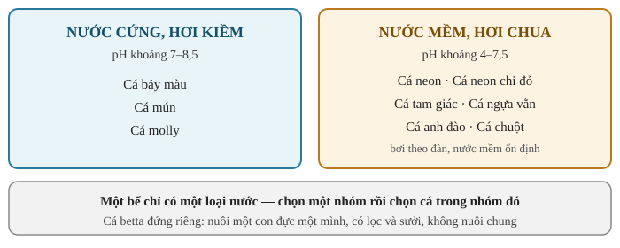

10 loại cá cảnh dễ nuôi nhất cho người mới
Tác giả: Ruler
Người mới thường chọn cá theo màu sắc. Đó là cách chọn dễ làm bể hỏng nhất. Một con cá đẹp nhưng cần nước mềm, lạnh và bơi theo đàn lớn sẽ chết rất nhanh trong bể nhỏ, nước cứng, chỉ nuôi một hai con. Ngược lại, một con cá ít nổi bật hơn nhưng hợp với nước máy nhà bạn, hợp với kích thước bể bạn đã mua và hợp với các loài còn lại trong bể sẽ sống khỏe trong nhiều tháng, nhiều năm.
Bài này không xếp hạng cá theo độ đẹp. Bài xếp cá theo ba câu hỏi thực tế: nước nhà bạn thuộc loại nào, bể của bạn rộng bao nhiêu, và bạn có nuôi theo đàn hay nuôi một con. Mười loài dưới đây được chọn vì chúng tha thứ cho sai sót nhỏ của người mới — cho ăn hơi nhiều một lần, thay nước trễ một hai ngày, nhiệt độ dao động nhẹ — chứ không phải vì chúng sống được trong nước bẩn. Không loài nào trong danh sách sống khỏe trong bể chưa chạy lọc, chưa xử lý nước. Điều kiện đó được giải thích đầy đủ ở Cách xử lý nước mới trước khi thả cá, và bài này giả định bể của bạn đã sẵn sàng.
Cách đọc bài này: nước cứng hay nước mềm quyết định một nửa
Trước khi chọn loài, hãy chia mười loài thành hai nhóm nước. Nhóm thứ nhất là cá đẻ con sống ở nước cứng, hơi kiềm: cá bảy màu, cá mún, cá molly. Nhóm thứ hai là cá bơi theo đàn sống ở nước mềm, hơi chua: cá neon, cá neon chỉ đỏ, cá tam giác, cá ngựa vằn, cá anh đào, cá chuột. Cá betta đứng riêng một nhóm: nuôi một con đực một mình, có lọc và sưởi, không nuôi chung với cá vây dài.
Vì sao phải chia như vậy? Vì một bể chỉ có một loại nước. Bạn không thể cùng lúc giữ nước cứng cho cá bảy màu và nước rất mềm cho cá neon rồi mong cả hai đều khỏe. Người mới nên chọn một nhóm nước rồi chọn cá trong nhóm đó.

Nếu bạn chưa đo nước máy nhà mình, hãy bắt đầu bằng nhóm cá đẻ con, vì nhóm này thường hợp với nước máy ở nhiều nơi hơn. Nếu bạn đã có bể cây thủy sinh, nước mềm và ánh sáng dịu, nhóm cá theo đàn sẽ lên màu đẹp hơn.
Một nguyên tắc khác: cá bơi theo đàn thì phải nuôi theo đàn thật. Sáu con là mức tối thiểu thường được nhắc tới cho nhiều loài, và với cá neon, hồ sơ loài của Seriously Fish khuyên nên nuôi từ 8 tới 10 con trở lên. Nuôi một con neon riêng lẻ không phải là tiết kiệm, mà là làm con cá đó stress, nhạt màu và hay trốn. Tiền mua một đàn nhỏ lúc đầu rẻ hơn tiền mua lại cá chết nhiều lần.
Bảng tổng hợp 10 loài
Bảng dưới đây tóm tắt các con số đã kiểm chứng, không sao chép nguyên một bảng của bất kỳ nguồn nào. Cột nước và nhiệt độ chỉ ghi khi có nguồn đã mở kiểm chứng ngày 23/11/2026; chỗ nào chưa có nguồn đủ tin cậy thì bảng ghi "kiểm tra hồ sơ loài trước khi mua" thay vì bịa một con số. Cột giá là khoảng tham khảo rộng, tổng hợp từ nhiều bảng giá Việt Nam khác nhau (xem ghi chú dưới bảng).
| Loài | Tầng bơi | Nhóm tối thiểu | Bể tối thiểu theo nguồn | Nước và nhiệt độ theo nguồn | Giá tham khảo 23/11/2026 |
|---|---|---|---|---|---|
| 1. Cá bảy màu (Guppy) | Giữa, mặt | 5 con trở lên | 10 gallon (khoảng 38 lít) theo bảng chăm sóc AquaCompat | RSPCA: chịu được 22–28°C; AquaCompat: pH 7–8 | 1.000–30.000 VNĐ/con |
| 2. Cá mún (Platy) | Giữa | 3 con trở lên | 14 gallon (khoảng 54 lít) theo Seriously Fish và AquaCompat; App-Aquatic ghi 60 lít cho nhóm 5–6 con | pH 7–8,2; nhiệt độ 20–26°C theo hồ sơ Seriously Fish | 3.000–20.000 VNĐ/con |
| 3. Cá neon (Neon tetra) | Giữa | 8–10 con | Mặt bể 60×30 cm, khoảng 54 lít theo Seriously Fish | Seriously Fish: 21–25°C, pH 4,0–7,5, độ cứng 1–12 dGH | 3.000–15.000 VNĐ/con |
| 4. Cá neon chỉ đỏ (Cardinal tetra) | Giữa | 10 con trở lên | 60 lít cho đàn 10–15 con theo Aquatech VN | Aquatech VN: 23–27°C, pH 5,5–7,0 | 5.000–10.000 VNĐ/con |
| 5. Cá ngựa vằn (Zebra danio) | Giữa, mặt | 8 con trở lên | Cần chiều dài bơi ngang, bể khoảng 70 lít trở lên theo App-Aquatic; AquaCompat ghi 20 gallon, nhiệt độ 18–24°C | Nhiệt độ 22–25°C theo App-Aquatic (khoảng ghi nhãn); chịu được 18–26°C theo đoạn văn của App-Aquatic, pH 6,5–7,5 | 5.000–15.000 VNĐ/con |
| 6. Cá tam giác (Harlequin rasbora) | Giữa | 8–10 con | Khoảng 54 lít theo Seriously Fish (mặt bể 60×30 cm); AquaCompat ghi 15 gallon, nhiệt độ 22–26°C | 21–28°C, pH 5–7,5 theo Seriously Fish | 5.000–10.000 VNĐ/con |
| 7. Cá molly | Giữa | 3 con trở lên | Khoảng 81 lít theo Seriously Fish (mặt bể 90×30 cm); AquaCompat ghi 20 gallon | pH 7–8,5; nhiệt độ 21–28°C theo hồ sơ Seriously Fish; AquaCompat ghi pH 7,5–8,5 | 10.000–20.000 VNĐ/con |
| 8. Cá anh đào (Cherry barb) | Giữa | 6 con trở lên | 60 lít cho nhóm nhỏ theo App-Aquatic | 22–26°C, pH 6,0–7,0 theo Aquatech VN; App-Aquatic ghi 22–27°C, pH 6,0–7,5 | 5.000–15.000 VNĐ/con |
| 9. Cá chuột (Corydoras) | Đáy | 4–6 con cùng loài (cá chuột đồng, theo Seriously Fish); nhóm Corydoras cùng loài ít nhất 6 con theo App-Aquatic | Khoảng 72 lít theo Seriously Fish cho cá chuột đồng (mặt bể 80×30 cm); AquaCompat ghi 20 gallon | pH 6–8; nhiệt độ 21–27°C theo Seriously Fish cho cá chuột đồng; AquaCompat ghi pH 6,5–7,5 | 15.000–25.000 VNĐ/con cho cá chuột phổ biến; cá chuột panda 20.000–70.000 VNĐ/con theo Aquatech VN |
| 10. Cá betta (cá xiêm) | Giữa, mặt | 1 con đực một mình | 40 lít cho 1 con đực theo App-Aquatic (bể có lọc, sưởi 24–28°C, có nắp); RSPCA đặt mức sàn chung khoảng 40 lít cho bể cá nói chung, không nuôi trong bát hay chậu nhỏ | Sưởi 24–28°C theo App-Aquatic; AquaCompat ghi khoảng rộng 22–30°C, pH 6–8 | 20.000–150.000 VNĐ/con cho cá thường; dòng vây dài và màu hiếm cao hơn nhiều |
Ghi chú về giá: các bảng giá Việt Nam không thống nhất với nhau. Ví dụ cá neon được ghi 3.000–8.000 VNĐ/con ở bảng giá Quy Nhơn trên cabaymau.vn, 6.000–12.000 VNĐ/con ở trang tổng hợp của Aquatech VN và 5.000–15.000 VNĐ/con ở bảng giá của Aquatech VN. Cá bảy màu được ghi 5.000–30.000 VNĐ/con ở bảng Quy Nhơn; Aquatech VN ghi 10.000–50.000 VNĐ cho một cặp cá bảy màu thuần chủng, không phải giá mỗi con, vì vậy bài này không đổi số đó ra giá mỗi con. Cá mún: bảng trong cùng nguồn Quy Nhơn ghi 5.000–15.000 VNĐ/con cho cá 4–5 cm, đoạn văn trong nguồn ghi 5.000–20.000 VNĐ/con. Hai trang của cabaymau.vn không thống nhất đầu dưới của khoảng giá: trang Quy Nhơn ghi cá bảy màu từ 5.000, cá mún từ 5.000, cá anh đào từ 10.000 VNĐ/con, trong khi trang "Top 23 Loài Cá Cảnh Dễ Nuôi" ghi cá bảy màu từ 1.000, cá mún từ 3.000, cá anh đào từ 5.000 VNĐ/con. Vì vậy cột giá trong bài là khoảng rộng bao trùm cả hai trang đã mở ngày 23/11/2026, không phải giá của một cửa hàng cụ thể và không phải giá cố định. Giá thay đổi theo dòng cá, màu sắc, kích thước và thời điểm mua. Người đọc cần kiểm tra giá tại cửa hàng vào ngày mua. Bài không ghi giá cho cá vây dài hay cá màu hiếm, vì nhóm đó có thể đắt gấp nhiều lần cá thường.
Ghi chú về bể tối thiểu: con số trong bảng là mức tối thiểu theo nguồn, không phải mức lý tưởng. RSPCA nói rõ "bể càng lớn càng tốt", vì thể tích nước lớn giữ nhiệt độ và chất lượng nước ổn định hơn. Bể tối thiểu 40 lít là mức sàn chung của RSPCA cho bể cá nói chung (kích thước lớn hơn 45×30×30 cm). Nếu bạn chỉ có bể 20 lít, đừng chọn cá theo đàn lớn; hãy quay lại Chọn bể cá đầu tiên: kích thước, lọc, đèn và nền để chọn bể trước rồi mới chọn cá.
Nhóm cá đẻ con: dễ nuôi nhất, nhưng sẽ có cá con
Cá bảy màu, cá mún và cá molly có một điểm chung mà người mới hay bất ngờ: cá cái đẻ ra cá con đã bơi được, không đẻ trứng. Vì vậy bể của bạn có thể đông lên rất nhanh mà bạn không kịp chuẩn bị. Cách xử lý thực tế nhất là nuôi nhiều cá cái hơn cá đực — ví dụ hai tới ba cá cái cho một cá đực — để cá đực không đuổi cá cái liên tục, và trồng nhiều cây để cá con có chỗ trốn. Nếu bạn không muốn bể đông lên, hãy nuôi toàn cá đực.
Cá bảy màu là loài dễ nhận biết nhất: cá đực nhỏ, màu rực, đuôi dài; cá cái lớn hơn và ít màu hơn. RSPCA ghi cá bảy màu chịu được 22–28°C, và bảng chăm sóc AquaCompat ghi pH 7–8, tức là hợp với nước cứng, hơi kiềm. Điểm yếu của cá bảy màu là nhiều dòng cá cảnh được lai tạo quá mức nên sức khỏe yếu hơn cá hoang dã. Khi mua, hãy chọn cá bơi khỏe, vây không rách, không có đốm trắng, và tránh mua cá đã nằm lờ đờ ở đáy bể cửa hàng.
Cá mún ít phô trương hơn cá bảy màu nhưng bền hơn trong nhiều bể của người mới. Cá mún ăn tạp, hiền lành và chịu được dao động nước tốt hơn một chút. Seriously Fish ghi cá mún ở pH 7–8,2 và nhiệt độ 20–26°C. Nếu bể của bạn hơi mát vào mùa đông và bạn chưa muốn dùng sưởi quá mạnh, cá mún là lựa chọn an toàn hơn cá molly.
Cá molly đẹp và lớn hơn hai loài trên, nhưng cũng cần bể lớn hơn và nước cứng, kiềm hơn. Hồ sơ Seriously Fish ghi mặt bể tối thiểu 90×30 cm (khoảng 81 lít) cho cá molly, còn bảng chăm sóc AquaCompat ghi 20 gallon. Seriously Fish còn lưu ý cá molly hợp nước hơi lợ nhẹ và dễ bệnh hơn khi nuôi trong nước ngọt mềm, chua, và không khuyến nghị cho bể cộng đồng chung chung. Đó là lý do bài này không xếp cá molly vào nhóm "bể nhỏ là nuôi được". Nếu bể của bạn dưới 80 lít hoặc nước nhà bạn mềm, hãy bỏ qua cá molly trong lần đầu và chọn cá bảy màu hoặc cá mún.
Nhóm cá bơi theo đàn: đẹp nhất khi đủ đàn và đủ cây
Cá neon là loài được hỏi nhiều nhất, và cũng là loài bị chết nhiều nhất trong tuần đầu, vì người mới thường thả neon vào bể mới chưa chạy lọc xong. Vì sao cá neon chết hàng loạt sau 1 tuần viết riêng về trường hợp này. Ở bài này chỉ cần nhớ ba con số của Seriously Fish: cá neon dài khoảng 30 mm tính tới gốc đuôi, cần mặt bể 60×30 cm (khoảng 54 lít), nhiệt độ 21–25°C, pH 4,0–7,5, độ cứng 1–12 dGH, nuôi từ 8 tới 10 con trở lên. Aquatech VN ghi khoảng hẹp hơn cho cá neon ở Việt Nam: nhiệt độ 20–26°C và pH 5,5–7,0. Hai khoảng này không mâu thuẫn nhau: khoảng hẹp nằm trong khoảng rộng. Điều quan trọng hơn cả hai khoảng là nước phải ổn định, không dao động mạnh trong ngày.
Cá neon chỉ đỏ, còn gọi là cardinal tetra, rất dễ nhầm với cá neon. Aquatech VN ghi cá neon chỉ đỏ dài 3–5 cm, sống theo đàn từ 10 con trở lên, bể tối thiểu 60 lít cho đàn 10–15 con, nhiệt độ 23–27°C, pH 5,5–7,0, giá lẻ 5.000–10.000 VNĐ/con. Cá neon chỉ đỏ cần nước ấm hơn cá neon một chút, vì vậy đừng thả hai loài vào cùng một bể rồi đặt nhiệt độ theo một loài và mong loài còn lại cũng khỏe. Nếu bạn thích vệt đỏ dài của cardinal, hãy chọn cardinal và đặt nhiệt độ theo cardinal. Người đã có kinh nghiệm mới nên thử nuôi chung hai loài, và khi đó phải giữ nhiệt độ thật ổn định trong khoảng giao nhau 23–25°C.
Cá ngựa vằn là loài năng động nhất trong danh sách. Chúng bơi liên tục ở tầng mặt và tầng giữa, cần chiều dài bơi ngang hơn là chiều cao bể. Vì vậy bể dài, thấp tốt hơn bể cao, hẹp cho loài này. Cá ngựa vằn chịu lạnh tốt hơn nhiều loài nhiệt đới khác, với khoảng chịu đựng 18–26°C theo đoạn văn của App-Aquatic; khoảng ghi nhãn của trang là 22–25°C, nhưng điều đó không có nghĩa là bạn có thể bỏ sưởi hoàn toàn vào mùa lạnh. Sưởi giữ nhiệt độ ổn định, và sự ổn định quan trọng hơn con số tuyệt đối.
Cá tam giác có vệt đen hình tam giác ở thân, bơi theo đàn rất đều và hiền lành. Đây là loài hợp với bể cây, ánh sáng dịu và nước mềm tới trung bình. Seriously Fish ghi cá tam giác ở 21–28°C, pH 5–7,5 và nuôi theo nhóm ít nhất 8–10 con; bảng chăm sóc AquaCompat ghi khoảng hẹp hơn 22–26°C, nằm trong khoảng rộng của Seriously Fish. Cá tam giác ít cắn vây cá khác, nên hợp nuôi chung với cá neon và cá chuột trong cùng một bể cộng đồng nước mềm.
Cá anh đào là loài ít được nhắc tới nhưng rất hợp với người mới muốn một bể có điểm nhấn màu đỏ mà không muốn cá quá nhạy cảm như cá neon. Cá anh đào cần nuôi theo nhóm từ 6 con trở lên, bơi ở tầng giữa, tính cách ôn hòa. Aquatech VN ghi cá anh đào ở 22–26°C, pH 6,0–7,0 và nuôi ít nhất 5–6 con; App-Aquatic ghi 22–27°C, pH 6,0–7,5 và bể 60 lít cho nhóm nhỏ. Hai khoảng này chồng lên nhau, vì vậy bài này dùng khoảng giao nhau 22–26°C, pH 6,0–7,0 trong bảng, và người đọc vẫn nên đối chiếu với nước nhà mình trước khi mua.
Cá chuột và cá betta: hai vai trò dễ hiểu lầm nhất
Cá chuột sống ở tầng đáy, bơi theo nhóm và sục tìm thức ăn ở nền bể. Nhiều người mua cá chuột với suy nghĩ "cá dọn bể", rồi không cho chúng ăn riêng. Đó là hiểu lầm. Cá chuột cần thức ăn chìm dành cho cá đáy, vì thức ăn nổi thường bị cá tầng giữa ăn hết trước khi chìm xuống. Seriously Fish ghi cá chuột đồng (tên khoa học hiện tại là Osteogaster aenea, trước đây là Corydoras aeneus) ở 21–27°C, pH 6–8 và thích nền cát mịn, vì râu của chúng dễ bị tổn thương trên nền sỏi sắc. Nếu bể của bạn dùng sỏi to, sắc, hãy chọn loài cá đáy khác hoặc đổi nền trước khi mua cá chuột.
Cá betta, còn gọi là cá xiêm, là loài duy nhất trong danh sách nên nuôi một mình. Cá betta đực sẽ đánh nhau với cá betta đực khác và có thể cắn cá vây dài. Nhiều người nuôi betta trong bát nhỏ vì thấy cá sống được một thời gian trong bát ở cửa hàng. RSPCA nói rõ không nên nuôi cá trong bát hay chậu nhỏ, và không nên nuôi cá mà không có lọc tốt. Betta cần bể có lọc, có sưởi ổn định cho cá nhiệt đới, có nắp vì cá có thể nhảy, và có chỗ trốn để cá nghỉ. Bể nhỏ không làm cá betta khỏe hơn, nó chỉ làm nước bẩn nhanh hơn.
Ba cách phối bể đầu tiên mà người mới có thể làm theo
Thay vì liệt kê mười loài rồi để người đọc tự ghép, bài này gợi ý ba cách phối đã tính tới nhóm nước và tầng bơi. Đây là gợi ý khởi đầu, không phải công thức duy nhất, và người đọc vẫn cần đo nước và chạy lọc xong trước khi thả cá.
Cách phối thứ nhất, bể nước cứng khoảng 60 lít: cá mún 5 con và cá chuột 6 con. Hai loài này đều hợp nước cứng, hơi kiềm. Đây là ví dụ của App-Aquatic cho bể 60 lít: một nhóm cá mún nhỏ và một nhóm cá chuột, không phải ba nhóm cá cùng lúc trong một bể 60 lít.
Cách phối thứ hai, bể nước mềm khoảng 60 lít, có cây: cá neon 10 con, ánh sáng dịu, nhiều cây và lũa. Nếu muốn thêm cá tam giác hay cá chuột, hãy dùng bể lớn hơn (khoảng 100 lít trở lên) và thêm từng nhóm một, vì ba nhóm cá theo đàn trong một bể 60 lít sẽ làm nước bẩn nhanh hơn bể chỉ có một đàn.
Cách phối thứ ba, bể một loài: cá betta 1 con đực, bể 40 lít có lọc và sưởi 24–28°C, nhiều cây và chỗ trốn. Cách này hợp với người chỉ muốn chăm một con cá và quan sát kỹ từng ngày.
Dù chọn cách nào, hãy thả một nhóm loài mỗi lần, chờ 2–3 tuần giữa các lần thêm và đo nước trước mỗi lần mua thêm, theo hướng dẫn của App-Aquatic. Thả một lúc mười con vào bể mới là cách nhanh nhất làm vi khuẩn lọc chưa kịp thích nghi, nước bẩn lên và cá chết theo đợt. Nguyên tắc này được giải thích kỹ ở Cách xử lý nước mới trước khi thả cá.
Checklist trước khi ra cửa hàng
- Đo pH và độ cứng nước máy nhà bạn, hoặc mang mẫu nước tới cửa hàng nhờ đo và ghi lại con số.
- Biết thể tích bể của bạn bằng lít, không ước lượng bằng mắt.
- Chọn một nhóm nước (cứng hay mềm) và chỉ mua cá trong nhóm đó trong lần đầu.
- Đếm số cá theo đàn tối thiểu trong bảng, đừng mua một hai con cá theo đàn về nuôi thử.
- Quan sát cá ở cửa hàng ít nhất vài phút: cá bơi khỏe, vây không rách, không có đốm trắng, không tách đàn nằm một góc.
- Hỏi cửa hàng cá đã về bao lâu, cá ăn loại thức ăn nào, và nước ở cửa hàng có pH bao nhiêu. Nếu cửa hàng không trả lời được, hãy cân nhắc mua ở nơi khác.
- Mang cá về bằng túi có nhiều không khí hơn nước, đi thẳng về nhà, thả cá theo cách làm quen nước đã hướng dẫn ở Cách xử lý nước mới trước khi thả cá và Chọn bể cá đầu tiên: kích thước, lọc, đèn và nền.
Ở Việt Nam, cá cảnh thường tập trung thành từng khu phố: ở Hà Nội là phố Hoàng Hoa Thám (quận Ba Đình), ở TP.HCM là chợ cá cảnh Lưu Xuân Tín (quận 5) — phiên chợ họp từ 4 giờ sáng, đã hình thành hơn 50 năm. Đi một buổi là xem được nhiều bể, so sánh được giá và chất lượng cá trước khi mua — đúng như checklist trên khuyên.
Kết luận
Cá dễ nuôi nhất không phải là cá rẻ nhất hay cá đẹp nhất. Đó là cá hợp với nước nhà bạn, hợp với bể bạn đã có và hợp với số lượng đàn mà bạn sẵn sàng nuôi. Người mới nên bắt đầu bằng một nhóm nước, một bể cộng đồng nhỏ với ba tầng bơi, và thả cá theo từng đợt sau khi bể đã chạy lọc xong. Khi đàn cá đầu tiên sống khỏe qua tháng đầu, bạn sẽ hiểu bể của mình hơn bất kỳ bảng thông số nào, và lần chọn cá thứ hai sẽ dễ hơn rất nhiều.
Nguồn tham khảo
- RSPCA, "Choosing an Aquarium for Pet Fish" — bể lớn hơn 45×30×30 cm (khoảng 40 lít), 1,5–2 lít nước cho mỗi 1 cm cá nhiệt đới, thay nước định kỳ để loãng chất thải (trang RSPCA ghi khoảng 30%/tuần ở mục lọc và lấy ra 10% ở mục thay nước — hai con số khác nhau trên cùng một trang, vì vậy bài không dùng một con số duy nhất làm quy tắc), amoniac và nitrit an toàn ở 0 mg/L, cá bảy màu chịu được 22–28°C, đèn 8–10 giờ mỗi ngày (truy cập 23/11/2026): https://science.rspca.org.uk/en/web/rspca/adviceandwelfare/pets/fish/environment
- Seriously Fish, "Paracheirodon innesi (Neon Tetra)" — cá neon dài 30 mm, mặt bể 60×30 cm (khoảng 54 lít), nhiệt độ 21–25°C, pH 4,0–7,5, độ cứng 1–12 dGH, nuôi từ 8–10 con trở lên, bệnh neon tetra do Pleistophora hyphessobryconis (truy cập 23/11/2026): https://www.seriouslyfish.com/species/paracheirodon-innesi
- AquaCompat, "Aquarium fish care chart" — bảng tổng hợp kích thước trưởng thành, bể tối thiểu, nhóm tối thiểu, nhiệt độ, pH cho cá bảy màu, cá mún, cá neon, cá tam giác, cá molly, cá chuột và các loài khác; các khoảng trong bảng là khoảng đồng thuận từ FishBase, Seriously Fish và các nguồn chuyên ngành (truy cập 23/11/2026): https://aquacompat.com/data-files/aquarium-fish-care-chart-us-letter.pdf
- Aquatech VN, "Cá Neon Chỉ Đỏ", "Các Loại Cá Cảnh Đẹp Nhất" và bảng giá — cá neon chỉ đỏ bể tối thiểu 60 lít, nhiệt độ 23–27°C, pH 5,5–7,0, giá lẻ 5.000–10.000 VNĐ/con; cá neon 6.000–12.000 VNĐ/con, nhiệt độ 20–26°C, pH 5,5–7,0; bảng giá ghi cá bảy màu thuần chủng 10.000–50.000 VNĐ cho một cặp (truy cập 23/11/2026): https://aquatechvn.com/products/ca-neon-chi-do, https://aquatechvn.com/cac-loai-ca-canh-dep-nhat.html và https://aquatechvn.com/bang-gia-ca-canh.html
- Cabaymau.vn, "Kinh Nghiệm Mua Cá Cảnh Ở Quy Nhơn Cho Người Mới" và "Top 23 Loài Cá Cảnh Dễ Nuôi Cho Người Mới Bắt Đầu" — bảng giá tham khảo theo khu vực: cá bảy màu 5.000–30.000 VNĐ/con, cá neon 3.000–8.000 VNĐ/con, cá xiêm 20.000–150.000 VNĐ/con, cá mún 5.000–20.000 VNĐ/con (bảng Quy Nhơn); trang thứ hai ghi đầu dưới thấp hơn: cá bảy màu từ 1.000, cá mún từ 3.000, cá anh đào từ 5.000 VNĐ/con (truy cập 23/11/2026): https://cabaymau.vn/mua-ca-canh-o-quy-nhon/ và https://cabaymau.vn/ca-canh-de-nuoi-2/
- Thuysinhable.com, "Top 5+ Loại Cá Cảnh Nhỏ Rẻ Tiền Và Dễ Nuôi Được Yêu Thích Cho Người Mới" — cá ngựa vằn 5.000–15.000 VNĐ/con, cá tam giác 5.000–10.000 VNĐ/con, cá molly 10.000–20.000 VNĐ/con, cá mún 10.000–20.000 VNĐ/con, cá chuột 15.000–25.000 VNĐ/con (truy cập 23/11/2026): https://thuysinhable.com/ca-canh-dep-de-nuoi/
- App-Aquatic, "Best Beginner Aquarium Fish | Easy Starter Species" — cá ngựa vằn chịu được 18–26°C, pH 6,5–7,5, cần bể tối thiểu khoảng 70 lít và nuôi theo nhóm từ 8 con trở lên; cá bảy màu, cá mún và cá chuột là các loài tha thứ cho sai sót nhỏ của người mới khi bể đã chạy lọc xong (truy cập 23/11/2026): https://app-aquatic.com/guide-best-beginner-aquarium-fish.html
- Aquatech VN, "Cá chuột panda" — cá chuột panda nhỏ 2–3 cm khoảng 20.000–40.000 VNĐ/con, cá trưởng thành 4–5 cm khoảng 50.000–70.000 VNĐ/con (truy cập 23/11/2026): https://aquatechvn.com/products/ca-chuot-panda
- Aquatech VN, "Khám phá thế giới cá cảnh Hoàng Hoa Thám sôi động" — phố Hoàng Hoa Thám (quận Ba Đình, một phần quận Tây Hồ), hàng chục cửa hàng san sát nhau, ví dụ Cá Kiểng Thu Hằng (727 Hoàng Hoa Thám), Bể Cá Sinh Thái (581 Hoàng Hoa Thám), Cá Cảnh Hương Ly (635 Hoàng Hoa Thám) (truy cập 25/11/2026): https://aquatechvn.com/ca-canh-hoang-hoa-tham.html
- Dân Việt, "Độc, lạ ở TP Hồ Chí Minh: Khu chợ có một không hai, khách soi đèn mua cá cảnh từ tờ mờ 4 giờ sáng" — chợ cá cảnh đường Trần Hưng Đạo – Lưu Xuân Tín (Quận 5) họp từ 4 giờ sáng, đã hình thành hơn 50 năm, giá cá thấp nhất từ 1.000 đồng (truy cập 25/11/2026): https://danviet.vn/doc-la-o-tp-ho-chi-minh-khu-cho-co-mot-khong-hai-khach-soi-den-mua-ca-canh-tu-to-mo-4-gio-sang-20240609103911747-d1166022.html